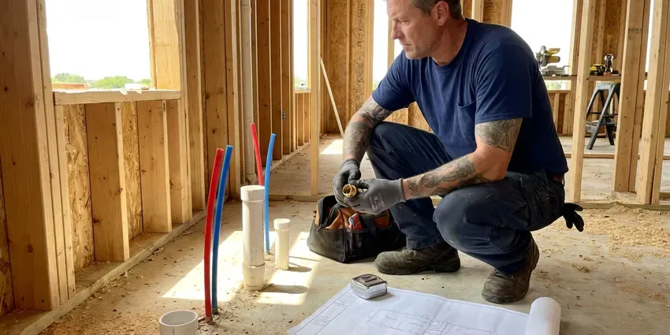

Walls Waterproofing in Nashville, TN
Hidden moisture in a wall usually starts at a pipe, a pan or a sprinkler head. We track it down and seal the wall in Nashville, TN.
- Interior Drain Tile Systems
- Shower Pan Flood Testing
- Written Quotes Before Work Starts
- Quick Leak Tracing

Keep Water Out of Your Walls in Nashville, TN.
Call and we will trace the moisture with meters and thermal imaging before recommending any waterproofing.
Durable Waterproofing for Showers, Block and Foundations in Nashville, TN
BGV Plumbing has sealed walls in Nashville, TN that leaked only in spring, only after a storm, or every single day. Hot, humid summers and cool winters with frequent freeze and thaw cycles are the main climate stresses on plumbing in Tennessee. We read the pattern before we pick a product, since a wall that leaks after rain needs drainage while a wall that stays damp all year often has a plumbing leak in it. Timing tells us a lot.
Work we handle every week:
- Crawl space vapor barrier installation
- French drains and downspout routing
- Interior drain tile along the footing

Additional Plumbing Maintenance Services in Nashville, TN
Our maintenance and specialty plumbing services in Nashville, TN catch small problems before they become emergencies.


Customers
Why Choose BGV Plumbing for Walls Waterproofing in Nashville, TN?
Footing joints leak. Our crews know how footings, cold joints and window wells let water in, and they work to the local code for drainage and grading on every job. A permit gets pulled when one is required.
- Skilled Crew, Our techs train on current membrane systems and jobsite safety practices.
- Lasting Repairs, Injection resins and elastomeric coatings last for decades when the wall is prepped right.
- Soil and Water Table, We check grading, downspouts and groundwater levels before choosing a fix.
Citywide Coverage
Every neighborhood in Nashville is in our service area, from older blocks close to the center of town to the newest subdivisions. Basements, crawl spaces and slab homes all get the same inspection. You get the same crew and process.
Experienced Team
The crew that shows up in Nashville, TN has handled bowed block walls, leaking window wells, failed shower pans and sump pits that ran over in a heavy storm. Few surprises are left. They will tell you plainly what they find.
Safety-First Approach
Excavation next to a foundation can undermine the footing if it is done carelessly. We dig in sections so no long run of wall is left without soil support, keep spoil piles back from the trench edge, and backfill in layers. Nobody works in an unprotected trench.
Trusted Certified Nashville Plumbing Services Professionals
At BGV Plumbing, we take pride in licensed, certified plumbing services throughout Nashville, TN. Credentials matter in this trade. Every repair, install and maintenance visit follows strict safety and quality rules, and the plumbers doing the work carry recognized industry credentials.
Call Us Now PHCC Plumbing Contractor Recognition
PHCC Plumbing Contractor Recognition Better Business Bureau (BBB) Accreditation
Better Business Bureau (BBB) Accreditation Angi Certified Pro
Angi Certified Pro ISO 9001 Quality Management Certification
ISO 9001 Quality Management CertificationFoundation, Shower and Block Wall Sealing in Nashville, TN
Below-Grade and Basement Wall Waterproofing in Nashville
Fast growth around Nashville means many newer subdivisions, but older neighborhoods still rely on aging clay or cast iron sewer laterals. Any wall below grade sits in soil that gets saturated after heavy rain or snowmelt, and that water pushes against the wall with real hydrostatic pressure. We inject cracks, coat the wall inside or out, and add drain tile wherever water collects at the footing. A sump goes in if groundwater sits high. Not every basement needs one.

Foundation Crack Repair & Sealing in Nashville
Hairline cracks in poured concrete walls leak more water than their size suggests. We inject them with low-pressure polyurethane, which expands to fill the crack from the inside face to the soil side, or with epoxy when the crack also needs structural bonding. Horizontal cracks are different. They can mean the wall is bowing from soil pressure, so we check for movement with a level before we seal anything. Vertical cracks are usually a one-visit job.
Crawl Space Encapsulation in Nashville
Encapsulation seals the whole crawl space, walls and floor, with a reinforced poly liner. We run 12 to 20 mil liner up the walls, tape every seam, seal around piers and pipe penetrations, and often add a dehumidifier to keep relative humidity below 60 percent. Hot, humid summers and cool winters with frequent freeze and thaw cycles are the main climate stresses on plumbing in Tennessee. Wood rot slows to a stop. Drier air under the floor also cuts down on the musty smell in the house.
Shower Wall Waterproofing in Nashville
Tile and grout are not waterproof. Water passes through grout every time you shower, so the layer behind the tile, cement board with a membrane or a foam board system, is what actually keeps the studs dry. We tear out failed tile, install new backer, and apply Schluter Kerdi, RedGard or Hydro Ban at the thickness the manufacturer calls for. Corners, niches and valve holes get extra fabric or preformed pieces.
Waterproofing Costs vs. Repeat Water Damage in Nashville, TN
Paying once beats paying every two years. Waterproofing a shower wall usually lands in the low thousands, while replacing drywall, cabinets and flooring again and again costs far more, and mold remediation on top of that can double the bill. Exterior block sealing depends on wall length. Your quote lists each option with its price.
Commercial Walls Waterproofing in Nashville
Commercial basements, elevator pits and mechanical rooms in Nashville take on water the same way houses do, just with more at stake. A wet electrical room can shut a business down. We schedule around operating hours, work with property managers on access, and meet the waterproofing specs in the building plans for below-grade walls. We keep downtime short.
Interior Walls Waterproofing in Nashville, TN
Interior drain tile handles water that already got through the wall. We cut a channel in the slab along the perimeter, lay perforated pipe in washed stone, and run it to a sump basin so the pump can push the water outside. The wall still gets wet. It just stops puddling on your floor. This route costs less than digging outside and works where a driveway or deck blocks the wall.

Exterior Foundation Waterproofing in Nashville
Exterior waterproofing means digging down to the footing and coating the outside of the wall. It is the most dependable way to stop a basement leak, because the water never touches the block or concrete. We apply a rubberized asphalt or polymer membrane, add a dimple board to protect it, and set perforated drain pipe in gravel along the footing so water has somewhere to go. Much of Tennessee sits on clay soils over limestone, and shallow rock can make digging for sewer and water line repairs slower and harder. Backfill goes in last.
Waterproofing Contractors Near You in Nashville, TN
Moisture meters and thermal cameras ride on every truck. That lets us tell you what is wrong before we leave, including where the water is coming from and which repair fits, instead of scheduling a second trip just to diagnose. Quotes come in writing.
Water in a wall does not wait for a convenient week. We keep open slots for active leaks, and when a pipe is still dripping inside the wall we can shut it off, open the drywall and get fans running the same day. Most cavities dry out in three to five days.
BGV Plumbing at a Glance
- Fully licensed plumbing team covering Nashville, TN
- Same-day appointments and 24/7 emergency response
- Clear written estimates, no hidden fees
- 4.9-star rated by 932+ Tennessee customers
Nashville Map
Nashville Information
- Population
- 687,788
- Area codes
- 615/931/629
- Service area
- Nashville and communities within 40 miles
- Nearby
- Hendersonville, Franklin, Smyrna, Gallatin
Wet basement walls feed mold and rot joists. Sealing the wall and draining the soil keeps a Nashville, TN crawl space or basement dry year round.
Talk to a Plumber
Call BGV Plumbing for honest, reliable plumbing from people who know the trade in Nashville, TN.
Our Specialized Plumbing Services in Nashville, TN
At BGV Plumbing, you get every kind of plumbing service from one company across Nashville, TN. We go from leak detection all the way to full system installations, for homes and commercial buildings, and we do it quickly at a fair price. Take a look at our core services below:


From Damp Wall to Sealed Wall in Nashville, TN
Our process starts with tracing the water and ends with a sealed, verified wall.
Request a Quote
Call (615) 518-0893 to set up an inspection. We walk the foundation and look for cracks, and we ask when the water shows up.
Thorough Inspection
We check every wall for cracks, efflorescence and bowing, then look at grading and downspouts. That tells us where the water comes from.
Custom Plan
You get a written plan, which may call for crack injection, drain tile, an exterior membrane or a combination.
Frequently Asked Questions About Walls Waterproofing in Nashville
Most jobs fall between $3,000 for interior crack sealing and $15,000 or more for exterior excavation with new footing drains. The size of the wall, how wet it gets, the method we pick and how easy the wall is to reach all move the number. Access is a big one. Nothing starts until you have the quote in writing.
Crack repairs take a few hours. Interior drain tile usually takes one to three days, and a full exterior dig around the whole house can run three to seven days or more depending on weather and how deep the footing sits. We give you a timeline at the first visit.
A shower wall job usually takes two to four days from demolition to finished membrane, counting the drying time between coats. Exterior block sealing often wraps up in a day. Larger foundation jobs can run several days, and weather can stretch that.
Yes. Our installs carry a written warranty on labor and materials, and the length depends on the system we put in, while many membranes and injection resins also come with a manufacturer warranty. Your service agreement lists the exact coverage.
Yes, a lot. Stopping liquid water at the wall brings the humidity in the basement down, and pairing it with a dehumidifier set around 50 percent keeps the air dry enough that mold and mildew have a hard time growing on stored boxes and framing. The musty smell tends to fade within a few weeks.
Small crack patches, sure. A complete system takes knowledge of drainage, foundation behavior and the application steps for each product, and mistakes are expensive since they stay hidden behind finished walls for years. Most DIY failures we see started at the footing joint.
Damp proofing is usually a thin spray-on asphalt coat. It slows soil moisture but will not stop water that is pushing against the wall under pressure. Waterproofing uses thicker membranes, drainage boards and footing drains rated to stop liquid water, which is what a basement in wet soil or a high water table needs.
Most systems we install should go 20 to 30 years or longer. Life span comes down to how it was installed, what method was used and what the soil around the house is like. Sump pumps wear out sooner. Most pumps last seven to ten years.
Hear From Customers Who Hired Our Plumbing Experts

Carlos V.
Our house still had galvanized pipe, and upstairs the shower was a trickle. The crew repiped everything in PEX over three days and patched every drywall hole before they left. The pressure difference is night and day.
Repiping · Smyrna, TN
Greg S.
I manage a small strip center with six tenants. BGV Plumbing handles our annual backflow testing and fixed a recurring clog in the shared sewer line that had been backing into the nail salon. Their reports come in clean and on time.
Commercial Plumbing · Spring Hill, TN
Sofia M.
Two new toilets went in during one visit. The tech set them on new wax rings and swapped the old supply lines. He also noticed our bathroom faucet dripping and replaced the cartridge while he was there. No mess left behind.
Toilet Installation · Spring Hill, TN
Diane F.
My kitchen faucet had dripped for months and I finally got tired of hearing it at night. BGV Plumbing came out the next morning, replaced the cartridge and the O rings, and tightened a loose base that was letting water under the sink.
Faucet Repair · Franklin, TNJessica T.
We were adding a gas range in a kitchen remodel and needed a new line run from the meter. The plumber pulled the permit, ran the pipe through the crawl space, and had it inspected and approved within the week.
Gas Line Repair · Smyrna, TNLaura S.
Our 40 gallon tank started leaking from the bottom after thirteen years. The tech hauled the old one out, set a new unit with a fresh expansion tank, and had hot water running in about four hours. He took the old tank with him too.
Water Heater Replacement · Spring Hill, TN